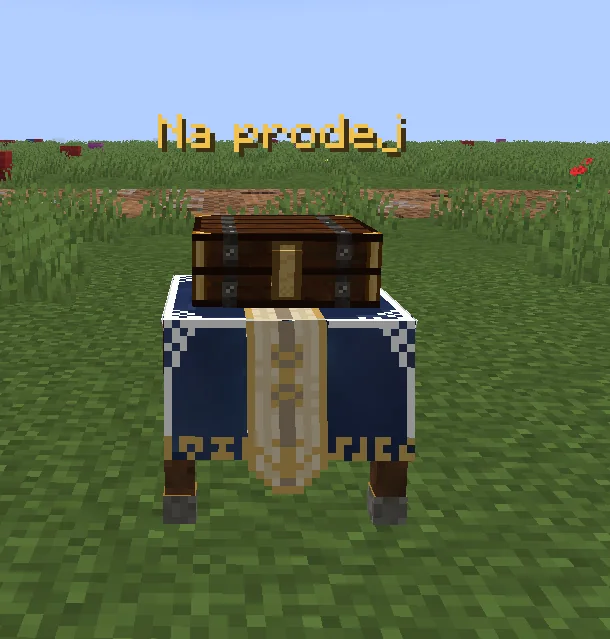
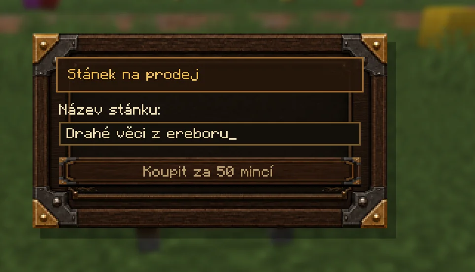
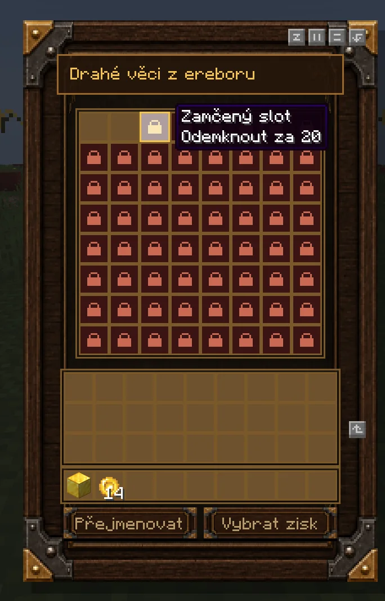

¶Hráčské obchody
iNa téhle stránce se dozvíš, jak si koupit vlastní stánek, jak v něm prodávat a jak přes Lupu obchodů najít zboží ostatních hráčů.
- Hráčské obchody najdeš na warpu Obchody – „Místo plné všech různých hráčských obchodů.“ [OVĚŘIT: přesný příkaz warpu]
- Každý obchod je stánek uprostřed vlastního pozemku. Kdo stánek koupí, dostane i pozemek kolem něj a může na něm stavět.
- Platí se mincemi Středozemě: zlatou, stříbrnou a měděnou.

¶Koupě stánku
- Volný stánek poznáš podle nápisu Na prodej a ceny nad ním (Cena: … mincí).
- Klikni na něj pravým tlačítkem, napiš název stánku (3 až 24 znaků) a potvrď tlačítkem Koupit za … mincí.
- Stánek se platí zlatými mincemi.

!Každý hráč může mít na celém serveru jen jeden stánek.
✓Po koupi je pozemek tvůj. Ostatní hráči na něm nemůžou kopat ani stavět a nepoškodí ho ani TNT, voda nebo láva.
¶Prodávání
- Stánek má sklad 8 × 8 políček. První 2 políčka máš zdarma, další si odemykáš postupně po jednom.
- Odemknutí políčka stojí 20 mincí v prvním řádku, 40 ve druhém a tak dál (20 × číslo řádku).
- Do odemknutého políčka vlož zboží a do okénka Cena za 1 kus napiš cenu. Cenu změníš pravým klikem na políčko.
- U každého zboží si vybereš, v jaké minci chceš platit.
- Políčko bez ceny se neprodává.
- Větší množství přidáš tlačítkem Označit: klikáš na hromádky ve svém inventáři a pak dáš Hotovo.

iVIP hráči můžou mít ve stánku navíc až 3 řádky. Kupují se ve VIP store.
¶Zisk a přejmenování
- Peníze za prodané zboží se ukládají do banky stánku. Vybereš je tlačítkem Vybrat zisk.
- Tlačítkem Přejmenovat změníš název stánku.
✕Dej si pozor! Když je banka stánku plná, stánek už nic neprodá. Zisk proto vybírej pravidelně.
¶Přesun stánku
- Stánek můžeš přesunout jen po vlastním pozemku: Shift + pravý klik s prázdnýma rukama.
- Zelená silueta znamená, že tam stánek jde postavit, červená, že nejde. Pravým klikem stánek položíš, znovu Shift + pravý klik přesun zruší.
- Zboží, ceny, banka i název zůstanou. Další přesun jde až za 10 sekund.
![OVĚŘIT] Přesun stánku přináší verze 0.2.0, která ještě čeká na test. Klávesa pro otočení stánku se doplní.
¶Nákup od ostatních hráčů
- Přijdi ke stánku, klikni na něj pravým tlačítkem a vyber zboží. Napiš, kolik kusů chceš, a uvidíš celkovou cenu.
- Co stánek prodává, je vidět i na ceduli nad ním.
¶Lupa obchodů
- Lupa obchodů prohledá všechny stánky na serveru. Otevřeš ji pravým klikem s Lupou v ruce.
- Hledání je zdarma. Můžeš filtrovat zboží, přepínat měnu (zlatá, stříbrná, měděná) a řadit od nejlevnějšího.
- U každé nabídky vidíš jméno prodejce a polohu stánku.
- Tlačítko Koupit koupí zboží na dálku a stojí jedno použití Lupy. Když použití dojdou, Lupa zmizí.
![OVĚŘIT] Jak Lupu obchodů hráč získá.
© Všechna práva vyhrazena tvůrcům módů, naším výtvorem je pouze zprostředkování serveru. Nejedná se o oficiální produkt Minecraftu. Nejsme spojeni s Mojang Studios.